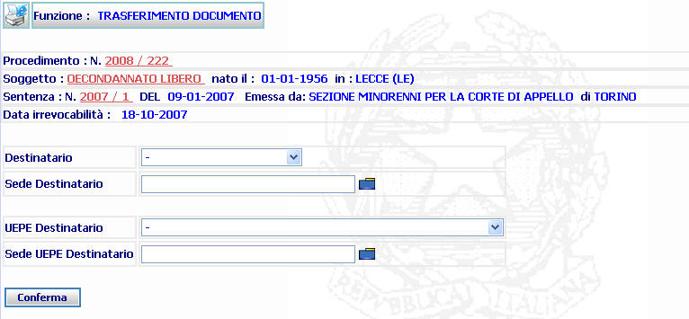
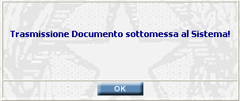
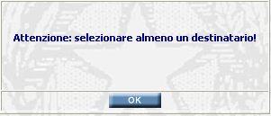

TRASFERIMENTO DOCUMENTO:
La funzione,
consente di
trasmettere per via telematica il
provvedimento;
questo processo è attivabile in qualsiasi maschera in cui è presente il
pulsante
 .
.
LE MASCHERE VIDEO
La funzione in esame viene realizzata attraverso la seguente maschera:

COME FARE PER ...
|
Inserire i dati del/dei destinatari cliccare sul tasto
| |
|
Al termine
il
sistema conferma l'operazione con il seguente messaggio

Cliccare sul
tasto | |
CAMPI
I dati che consentono di trasmettere per via telematica il provvedimento sono i seguenti:
| NOME | DESCRIZIONE |
| Destinatario | Selezionare tramite la tendina il destinatario |
| Sede Destinatario |
Inserire
manualmente o selezionare
tramite lil
pulsante di ricerca da lista
predefinita
|
| UEPE Destinatario | Selezionare tramite la tendina l'U.E.P.E. destinatario |
| Sede UEPE Destinatario |
Inserire
manualmente
o selezionare
tramite il
pulsante di ricerca da lista
predefinita
|
PULSANTI
Oltre ai pulsanti orizzontali dell'area di navigazione, sono presenti i seguenti pulsanti:
|
PULSANTE |
DESCRIZIONE |
|
|
Questo pulsante ha lo
scopo di stampare il contesto (videata) |
|
|
Questo pulsante di ricerca da lista predefinita ha lo scopo di selezionare, da una lista predefinita, il contenuto da inserire nel campo corrispondete. |
BOTTONI
Oltre ai comandi funzionali relativi al menù verticale sono presenti i seguenti comandi:
|
COMANDI |
DESCRIZIONE |
|
|
A fronte di tale comando, il sistema dopo aver verificato la validità dei dati specificati, termina la funzione con la sottomissione al sistema della trasmissione del documento. |
CONTROLLI
Il sistema verifica che sia stato inserito almeno un destinatario per la trasmissione telematica del documento, diversamente visualizza il messaggio

Agendo sul
bottone  viene
ripresenta la maschera di Trasferimento del Documento.
viene
ripresenta la maschera di Trasferimento del Documento.